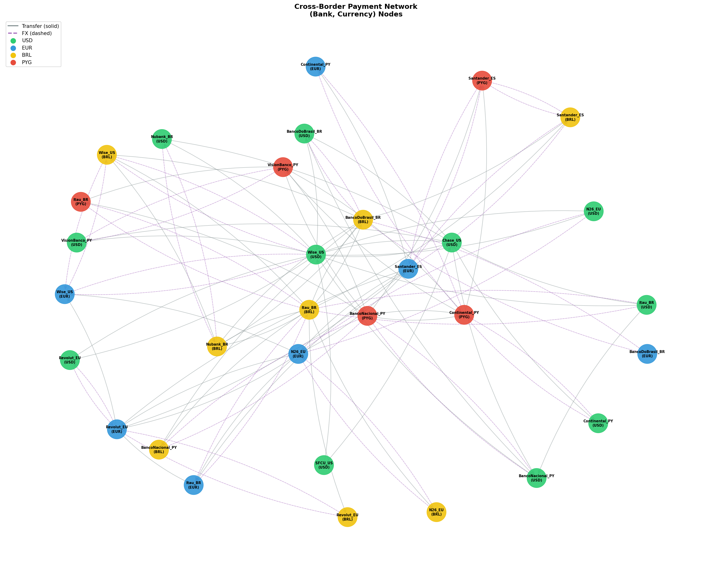
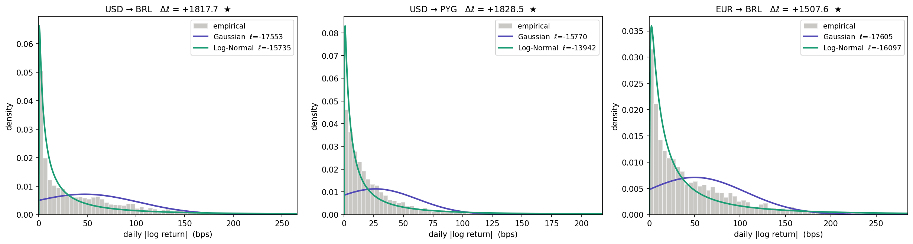
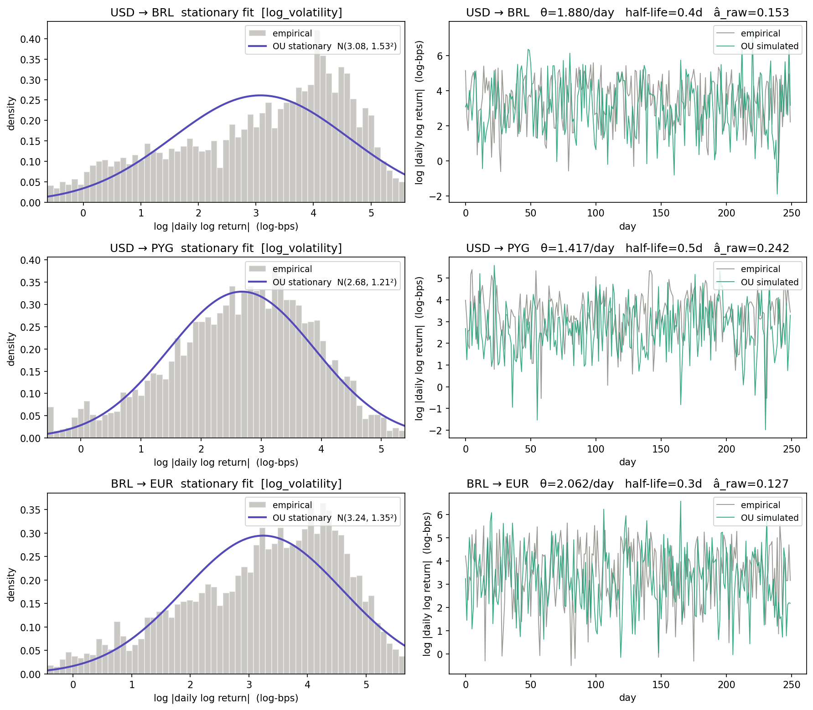
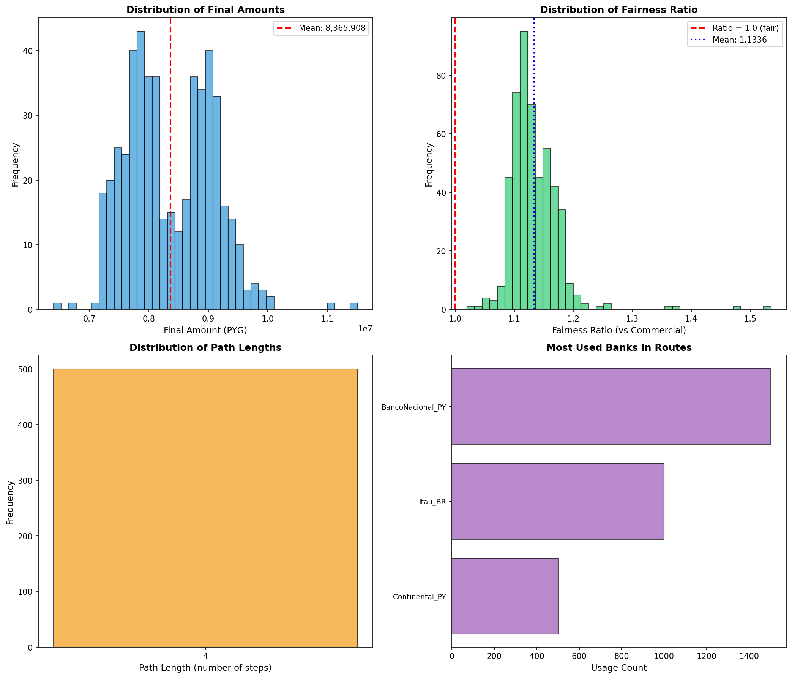
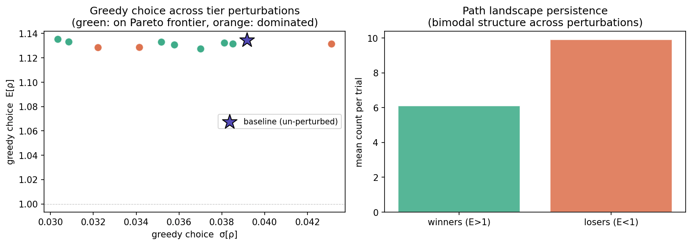

A "Google Maps for Money" — built on MLE, Ornstein–Uhlenbeck dynamics, and mean-variance optimization
Why 10–15% of every cross-border transfer disappears
Sending money between Paraguay, Brazil, and the US consistently loses 10–15% to opaque institutional FX markups and transfer fees compounded at every hop of the correspondent banking chain. For a student wiring tuition funds it's a nuisance; for a small business in the EU-Mercosur corridor, it's a structural barrier.
The EU-Mercosur Interim Trade Agreement entered provisional application one month before this submission, linking a 780-million-consumer trading zone across Europe and South America.
€4B+/yr tariff savings · EUR ↔ BRL ↔ PYG corridors
Gaussian vs Log-Normal — the Jacobian makes the comparison exact
ℓ(μ,σ²) = −Σ log xᵢ
− n/2 · log(2πσ²)
− 1/(2σ²) · Σ(log xᵢ − μ)²
The leading −Σ log xᵢ is the Jacobian of Y = log X, putting ℓLN and ℓG on the same Lebesgue measure on ℝ₊. Without it, the comparison is invalid.

Closed-form AR(1) OLS — no numerical optimizer — plus the bridge to Phase 1
dYₜ = θ(μ − Yₜ) dt + σ dWₜ Stationary: Y∞ ~ N( μ, σ²/2θ )
Yₜ₊₁ = â·Yₜ + b̂ + εₜ â = S_XY/S_XX → θ̂ = −log(â)/Δt
Signed returns give â ≈ 0 (weak-form efficiency — no memory). Log-volatility yₜ = log|rₜ| clusters. The OU transition density becomes AR(1), solved by OLS — no numerical optimizer.

Because Y∞ is Gaussian, exp(Y∞) is Log-Normal — exactly the distribution Phase 1 fit by MLE. Two phases, one coherent model.
16 feasible paths — 6 on the Pareto frontier — interactive λ explorer below
U_MV(X) = E[X] − (λ/2) · Var[X]
λ*ᵢ→ⱼ = 2(Eᵢ − Eⱼ) / (σᵢ² − σⱼ²)
Paths split into two regimes. The greedy policy (orange ring) lands on the Pareto frontier at the λ=0 optimum.
n = 500 Monte Carlo realizations — confidence intervals and one-sample z-test
ρ̄ ~ N( E[ρ], Var[ρ]/n ) 95% CI: ρ̄ ± 1.96 · σ̂_ρ / √n
Z = (ρ̄ − 1) / (σ̂_ρ / √n) ~ N(0,1)

Robustness to structural priors — and a four-phase summary
